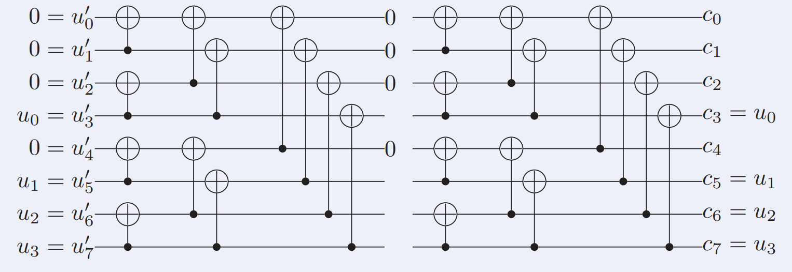
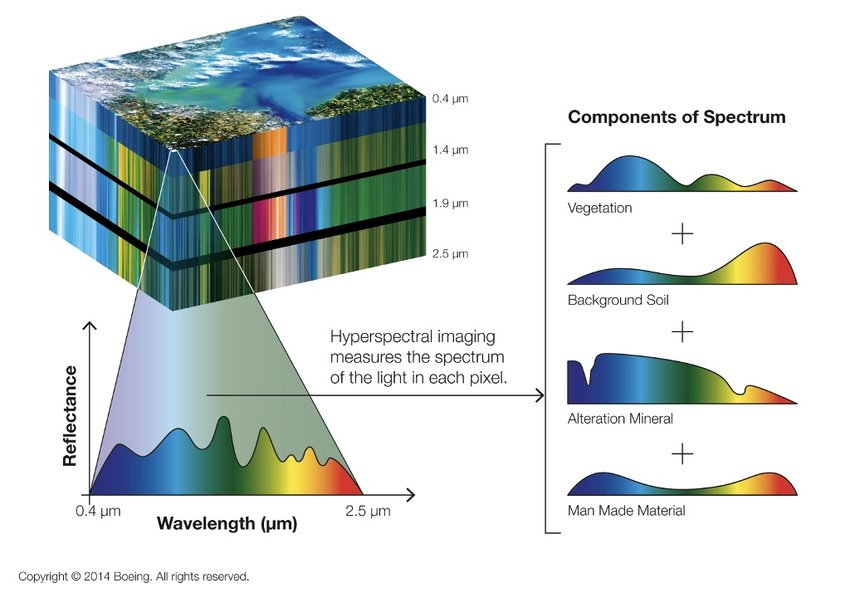

Houcine AYOUBI
I am Houcine AYOUBI, an engineering student at IMT Atlantique with a deep interest in applied mathematics and high-performance computing. I’m actively seeking R&D engineer opportunities where I can combine rigorous analysis with high-performance implementation to deliver impactful results.
Feel free to view my projects or contact me for collaborations, internships, or full-time roles.

Publications

Low-Latency Software Polar Encoders and Decoders for Short Blocklengths
Mathieu Leonardon, Mohammed-El-Houcine Ayoubi, Adrien Cassagne, Romain Tajan, Camille Leroux
International Symposium on Topics in Coding (ISTC), 2025
Project Page / Paper /
Mathieu Leonardon, Mohammed-El-Houcine Ayoubi, Adrien Cassagne, Romain Tajan, Camille Leroux
International Symposium on Topics in Coding (ISTC), 2025
Project Page / Paper /
@InProceedings{Niemeyer2025NEXF,
author = {Mathieu Leonardon and Mohammed-El-Houcine Ayoubi and Adrien Cassagne and Romain Tajan and Camille Leroux},
title = {Low-Latency Software Polar Encoders and Decoders for Short Blocklengths},
booktitle = {International Symposium on Topics in Coding (ISTC)},
year = {2025},
}Projects

Hyperspectral imaging unmixing
Mohammed-El-Houcine Ayoubi, Ahmed ABOULKACEM, Mouad SOUSSI
University project on numerical methods, 2025
Project Page / Paper /
Mohammed-El-Houcine Ayoubi, Ahmed ABOULKACEM, Mouad SOUSSI
University project on numerical methods, 2025
Project Page / Paper /
@InProceedings{Niemeyer2025NEXF,
author = {Mohammed-El-Houcine Ayoubi and Ahmed ABOULKACEM and Mouad SOUSSI},
title = {Hyperspectral imaging unmixing},
booktitle = {University project on numerical methods},
year = {2025},
}